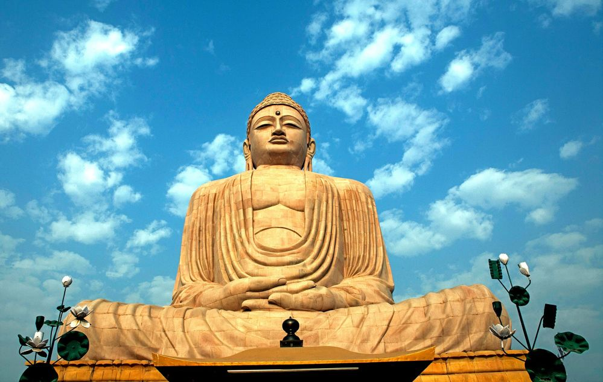
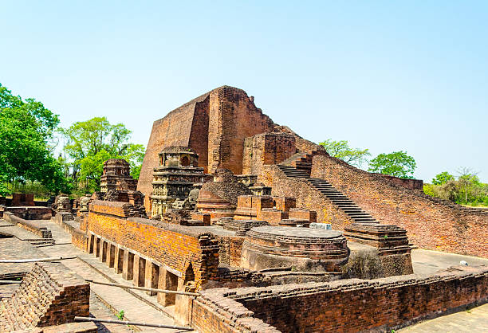
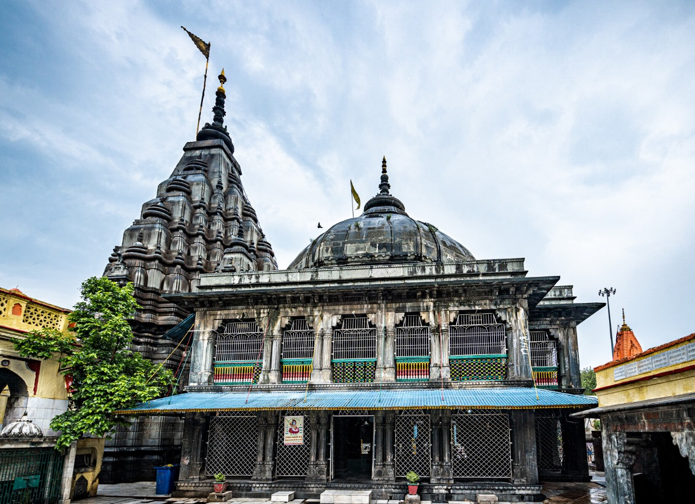
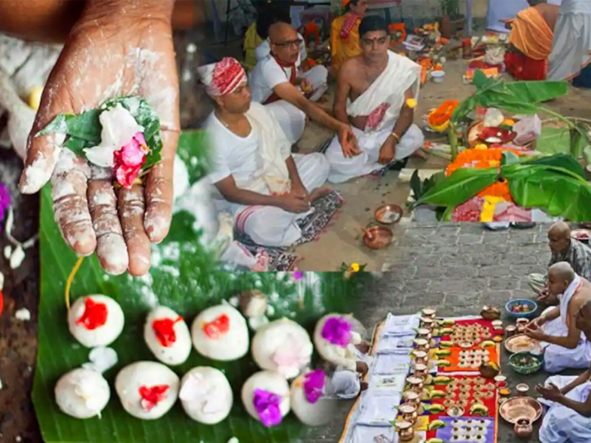

Hanuman Mandir

Details: A popular Hindu temple dedicated to Lord Hanuman in Patna.
Visitor Reviews: "A spiritually uplifting experience!"
Annual Visitors: 5,000,000
Great Buddha Statue
Details: A monumental statue of Buddha located in Bodh Gaya.
Visitor Reviews: "A serene and peaceful place, a must-visit!"
Annual Visitors: 2,500,000
Nalanda
Details: Ancient center of learning, one of the oldest universities in the world.
Visitor Reviews: "A glimpse into the rich history of education in India."
Annual Visitors: 1,200,000
Vishnupad Temple
Details: A sacred temple in Gaya dedicated to Lord Vishnu.
Visitor Reviews: "A divine experience, the architecture is stunning."
Annual Visitors: 3,000,000
Pind Daan Gaya
Details: A sacred Hindu ritual site in Gaya.
Visitor Reviews: "A place of immense spiritual significance."
Annual Visitors: 1,500,000
Jim Corbett National Park
Details: A beautiful national park, home to Bengal tigers.
Visitor Reviews: "A wildlife enthusiast's paradise!"
Annual Visitors: 2,000,000
Nalanda University Ruins
Details: Ruins of the ancient Nalanda University, a UNESCO World Heritage Site.
Visitor Reviews: "A must-visit for history buffs!"
Annual Visitors: 1,000,000
Eco Park (Rajdhani Vatika)
.jpg)
Details: A beautiful green park in Patna, ideal for a relaxing day out.
Visitor Reviews: "A peaceful escape within the city!"
Annual Visitors: 1,500,000